Géographie et éducation à la citoyenneté
11 / 11 territoires
Le territoire protégé : le parc naturel
Territoire protégé · Régional · Concilier la protection et la fréquentation
- aménagement
- conservation
- environnement
- parc naturel
- patrimoine naturel
- réglementation
- Les îles Galápagos
- L'île d'Anticosti

Mise en contexte
Un territoire protégé est un espace naturel organisé autour d'un projet d'aménagement qui vise à protéger le patrimoine naturel et les écosystèmes, à en assurer la gestion et à permettre un développement économique. Certains parcs, qui protègent des phénomènes reconnus pour leur valeur exceptionnelle ou en voie de disparition, sont inscrits sur la Liste du patrimoine mondial de l'UNESCO. Toute la question tient dans un équilibre : il faut à la fois laisser les gens fréquenter ces lieux et empêcher que cette fréquentation les détruise. Un seul type de territoire protégé est retenu ici, le parc naturel.
Il sera question des îles Galápagos, en Équateur, puis de l'île d'Anticosti, inscrite au patrimoine mondial en 2023.
Concepts à l'étude
Pour comprendre les territoires protégés de la planète, il ne suffit pas de connaître ces huit concepts un par un. Il faut surtout saisir les liens qui les unissent : la fréquentation d'un parc exerce une pression sur son écosystème, la conservation cherche à préserver sa biodiversité, l'aménagement tente de concilier les deux, et l'UNESCO reconnaît les lieux dont le patrimoine compte pour l'humanité entière.
Huit concepts à découvrir
Deux autres concepts du programme complètent ceux de ta fiche :
- Parc naturel : aussi appelé parc national, un milieu naturel aménagé pour en assurer la protection tout en permettant au public de le fréquenter.
- Réglementation : l'ensemble des lois et des règles qui encadrent une activité ou un lieu.
Le patrimoine naturel
Le patrimoine naturel est l'héritage naturel que nous recevons du passé, dont nous profitons aujourd'hui et que nous transmettons aux générations à venir. Les sites patrimoniaux naturels sont des paysages et des milieux que les humains n'ont pas façonnés. Ce sont des sites dont la valeur est jugée exceptionnelle pour la science et pour la biodiversité, mais aussi pour leur beauté. Une forêt ancienne, un récif corallien ou un archipel volcanique peuvent en faire partie. Les deux territoires de cette page appartiennent à cette catégorie.
L'UNESCO et la Convention de 1972
Un organisme participe à toutes les étapes qui mènent à nommer, à protéger et à restaurer les éléments du patrimoine mondial : l'UNESCO, l'Organisation des Nations unies pour l'éducation, la science et la culture. Sa mission en matière de patrimoine consiste surtout à encourager les pays à sélectionner, à protéger et à conserver les éléments de leur patrimoine. Pour mieux y parvenir, l'UNESCO a mis sur pied la Convention pour la protection du patrimoine mondial en 1972. Cette convention permet aux pays membres d'inscrire certains biens historiques, culturels et naturels sur la Liste du patrimoine mondial.
Une inscription n'est pas qu'un honneur. Elle engage le pays à protéger le site, à rendre compte de son état et à accepter un regard extérieur sur sa gestion. Pour un parc naturel, cela veut dire surveiller la fréquentation et protéger l'écosystème, même quand les visiteurs rapportent de l'argent.
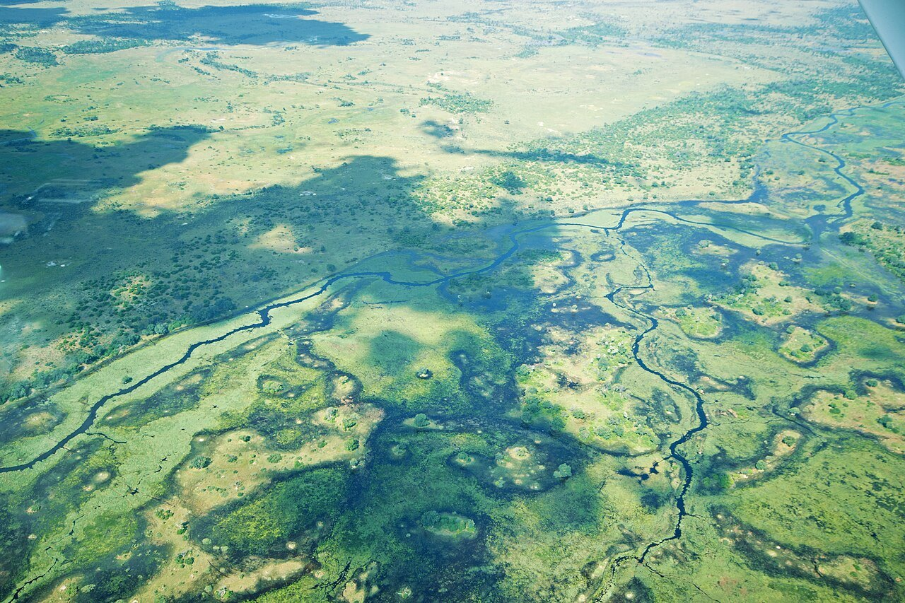
Source
Vaughan McShane, Botswana - 36034632214, Wikimedia Commons. Licence : Creative Commons BY-SA 2.0.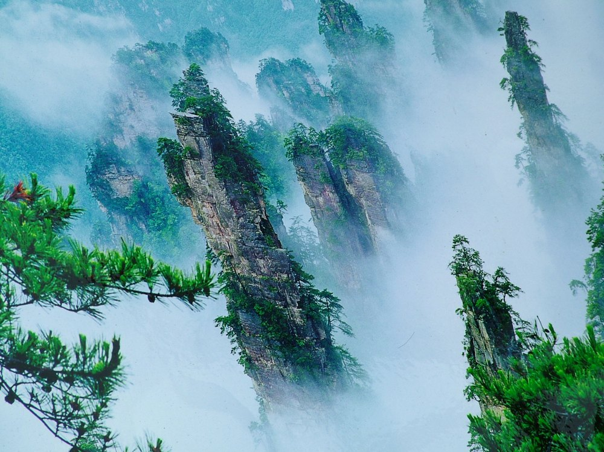
Source
cncs, Zhangjiajie-Hunan, Wikimedia Commons. Licence : Creative Commons BY-SA 4.0.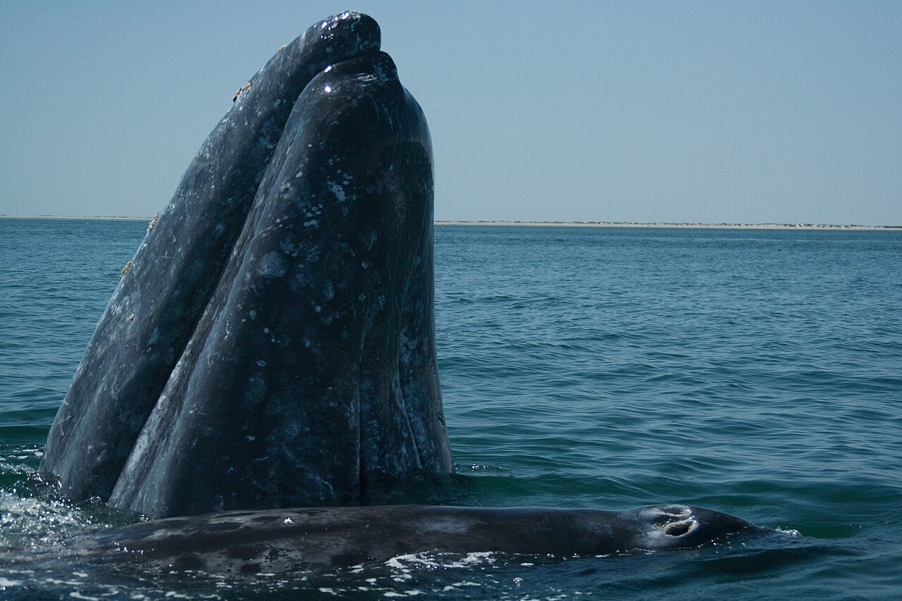
Source
José Eugenio Gómez Rodríguez, Ballena gris adulta con su ballenato, Wikimedia Commons. Licence : Creative Commons BY 3.0.Les sites naturels inscrits sur la Liste sont très variés. Au Botswana, le delta de l'Okavango est un delta intérieur : le fleuve n'atteint jamais la mer et se perd dans le désert du Kalahari. Inscrit en 2014, il est le millième site de la Liste. En Chine, Wulingyuan compte plus de 3 000 piliers de grès, dont plusieurs dépassent 200 mètres de hauteur. Au Mexique, le sanctuaire de baleines d'El Vizcaíno, inscrit en 1993, protège les lagunes de Basse-Californie où les baleines grises viennent mettre bas.
Explorer la Liste du patrimoine mondial
Consulter la Liste du patrimoine mondial
Premier cas : les îles Galápagos
Tu connais maintenant les concepts et le rôle de l'UNESCO. Place au premier territoire à l'étude : les îles Galápagos, en Équateur. Ce choix n'est pas un hasard. Quand l'UNESCO a inscrit ses premiers sites en 1978, les Galápagos ont reçu le numéro 1 de la Liste du patrimoine mondial. Elles montrent aussi, mieux que bien d'autres parcs, à quel point il est difficile de concilier la protection et la fréquentation.
Les dates qui comptent
Ces huit dates couvrent près de cinq siècles. Observe surtout le rythme : l'archipel des Galápagos a été abordé en 1535, mais la première mesure de protection date de 1959. Pendant plus de quatre cents ans, personne n'a songé qu'un territoire pouvait avoir besoin d'être protégé.
Situer les Galápagos
L'archipel se trouve dans l'océan Pacifique, à environ 1 000 kilomètres des côtes de l'Équateur, à cheval sur l'équateur terrestre. Il compte 127 îles, îlots et rochers, dont 19 de grande taille, et seulement quatre sont habitées. La superficie des terres atteint environ 8 000 kilomètres carrés. Les îles se sont formées par éruptions volcaniques. Leur relief est montagneux et compte de nombreux cratères, dont celui du volcan Wolf, actif, qui culmine à 1 707 mètres.
Les Galápagos, île par île
Touche une île ou la réserve marine
Parc et patrimoine mondial : UNESCO, site 1 (inscription 1978, extension 2001, liste en péril 2007-2010; superficie de la réserve marine, 133 000 km²); Direction du parc national Galápagos (97 % des terres, 1959). Réserve Hermandad : Fondation Charles-Darwin, janvier 2022. Îles : Galapagos Conservation Trust (Fernandina, Pinta, Genovesa, Marchena, Española, Floreana, liste des îles habitées); Galápagos Conservancy (Isabela, Santa Cruz, San Cristóbal, Santiago, Projet Isabela); Fondation Charles-Darwin (tortues de Floreana, 2026). Droit d'entrée : Travel Market Report, 2024. Superficies des îles calculées sur Natural Earth, arrondies. Consulté en novembre 2026.
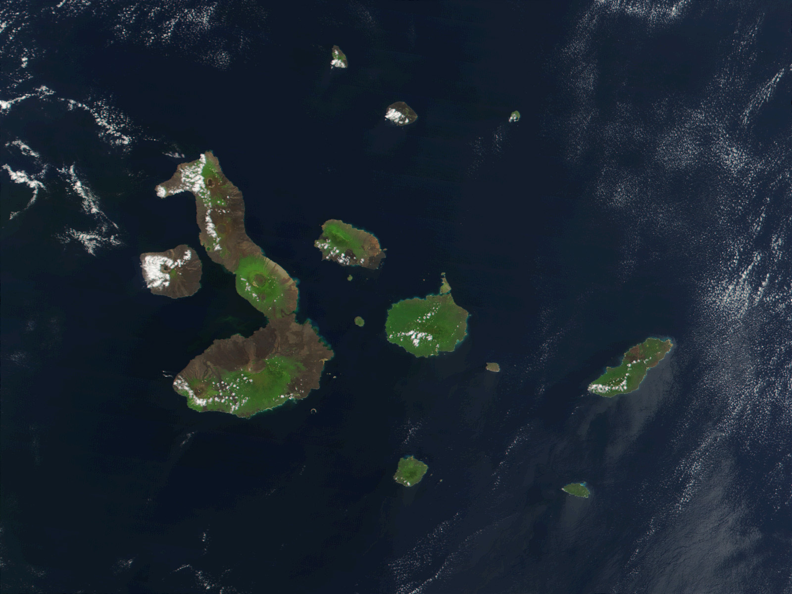
Source
Jacques Descloitres, MODIS Rapid Response Project at NASA/GSFC, Galapagos-satellite-2002, Wikimedia Commons. Licence : Domaine public.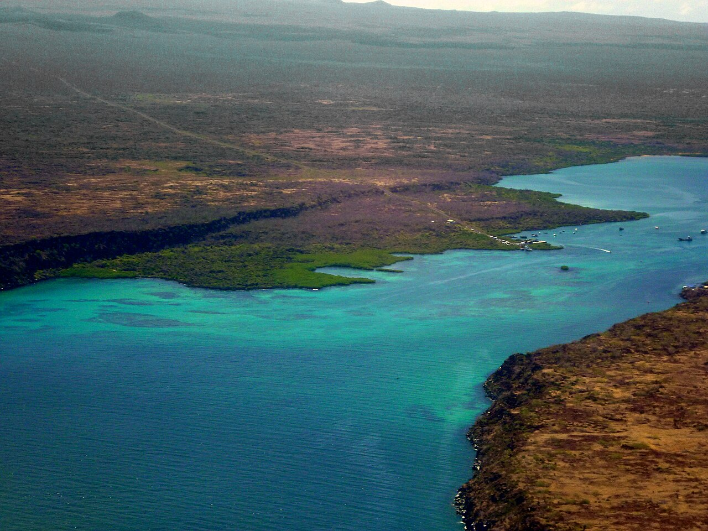
Source
David Adam Kess, Alvaro Sevilla Design Isla Santa Cruz Galapagos foto tomada desde el avión, Wikimedia Commons. Licence : Creative Commons BY-SA 3.0.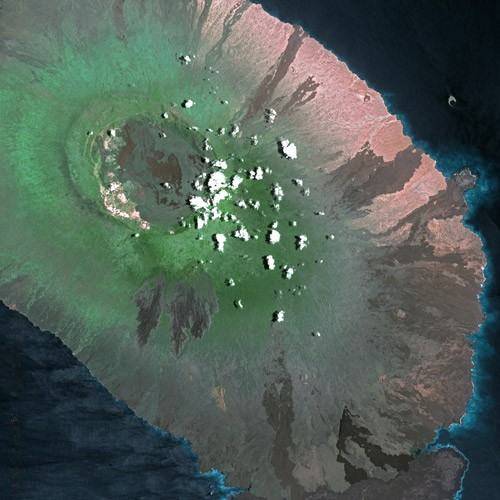
Source
Cnes - Spot Image, Galapagos SPOT 1178, Wikimedia Commons. Licence : Creative Commons BY-SA 3.0.Une géologie qui explique tout le reste
Trois plaques tectoniques majeures se rencontrent au fond de l'océan à cet endroit : Nazca, Cocos et Pacifique. C'est ce qui produit le volcanisme et les séismes. Comparé à la plupart des archipels océaniques, celui des Galápagos est très récent : Isabela et Fernandina, les îles les plus grandes et les plus jeunes, ont moins d'un million d'années. Les îles sont aussi au confluent de trois courants océaniques, ce qui explique la richesse de la vie marine.
Source : UNESCO
Une faune qu'on ne voit nulle part ailleurs
Une espèce endémique est une espèce qu'on ne trouve qu'à un seul endroit. Les Galápagos en comptent un nombre remarquable pour un archipel aussi jeune : tortues géantes, iguanes marins, le pingouin le plus septentrional du monde, des cormorans devenus incapables de voler, les pinsons de Darwin et les moqueurs des Galápagos.
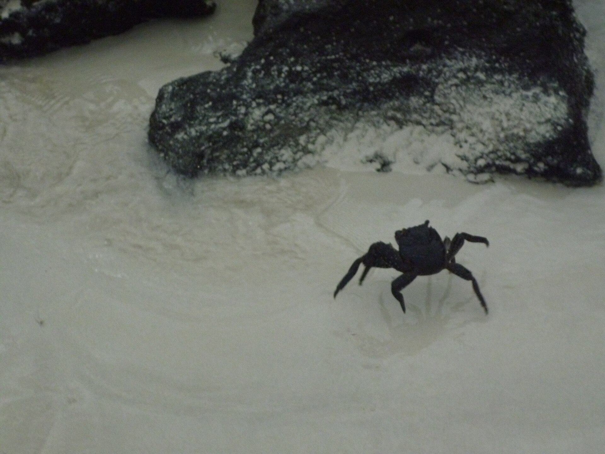
Source
David Adam Kess, Crab walking on Tortuga Bay in the Galapagos photo by Alvaro Sevilla Design, Wikimedia Commons. Licence : Creative Commons BY-SA 3.0.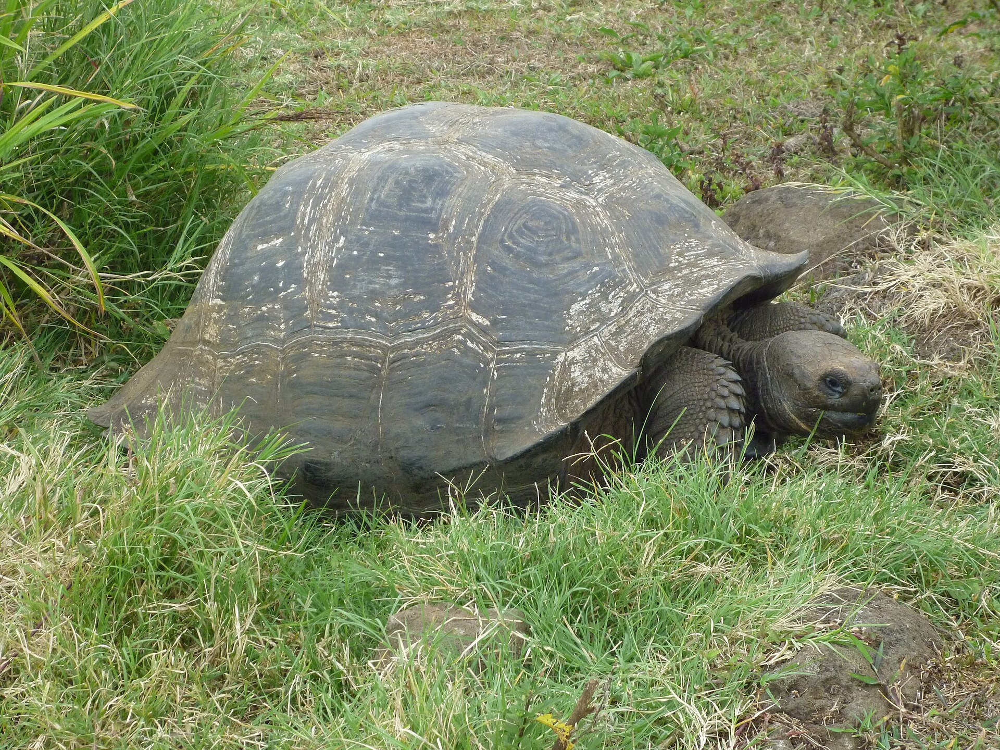
Source
David Adam Kess, Gigantic Turtle on the Island of Santa Cruz in the Galapagos, Wikimedia Commons. Licence : Creative Commons BY-SA 3.0.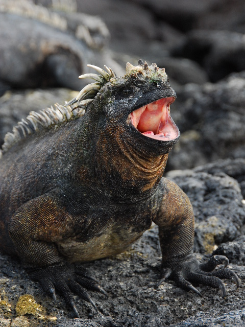
Source
David Adam Kess, Galapagos Island of Santa Cruz - Tortuga Bay Marine Iguana, Wikimedia Commons. Licence : Creative Commons BY-SA 3.0.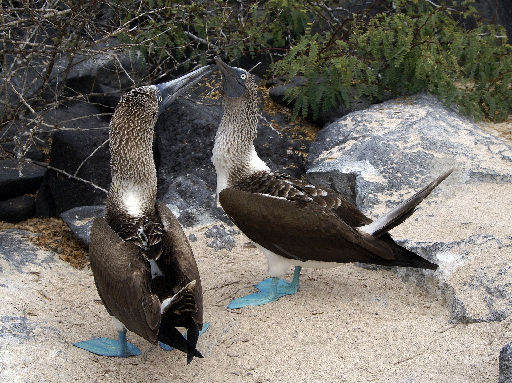
Source
putneymark, Pair of Blue-footed Boobies, Española, Galapagos, Wikimedia Commons. Licence : Creative Commons BY-SA 2.0.Les tortues géantes
Ce sont les animaux les plus connus de l'archipel, et ce sont elles qui lui ont donné son nom : voyant la forme de leur carapace, les Espagnols y ont vu une selle de cheval, ce que le mot galápago désigne aussi. Elles peuvent peser plus de 250 kilogrammes et vivre plus de cent ans, ce qui en fait l'un des vertébrés les plus longévifs.
L'iguane marin
L'iguane marin, Amblyrhynchus cristatus, est le seul lézard au monde à mener une vie amphibie. Adulte, il se nourrit uniquement d'algues rouges et vertes qu'il broute sur les fonds marins. Il dépend donc entièrement des côtes, plages ou falaises. Les mâles plongent à plusieurs mètres de profondeur; les femelles et les jeunes se nourrissent plutôt sur les rochers battus par les vagues. Une seule espèce, mais onze sous-espèces réparties selon les îles.
Source : Miralles et collaborateurs, 2017
Le fou à pieds bleus
Cet oiseau marin mesure environ 81 centimètres et pèse 1,5 kilogramme, pour une envergure pouvant atteindre 165 centimètres. Ses yeux jaunes, placés de chaque côté du bec et orientés vers l'avant, lui donnent une excellente vision en relief. Ses narines sont fermées en permanence, une adaptation à la plongée : il respire par les coins du bec. La moitié de la population mondiale vit aux Galápagos. Il ne vient à terre que pour se reproduire, sur les côtes rocheuses.
Darwin et l'idée qui a tout changé
Les Espagnols abordent l'archipel par hasard en 1535, quand l'évêque Tomás de Berlanga y est dérouté par les courants. Mais ce sont les cinq semaines qu'y passe Charles Darwin, en 1835, lors du voyage du Beagle, qui rendent les îles célèbres. Darwin y observe que des oiseaux d'une même famille possèdent des becs différents selon l'île qu'ils habitent. Il en tirera la théorie de la sélection naturelle : un individu qui possède une caractéristique lui donnant un avantage, un bec plus long par exemple, se nourrit mieux, survit davantage et transmet cette caractéristique à sa descendance. Avec le temps, la caractéristique se répand dans toute la population de l'île.
Protéger, et ce que ça coûte
Six façons de protéger un parc
Choisis un moyen
L'archipel est protégé depuis 1959, année où le parc national est créé sur 97 % de la superficie des îles. La protection s'est ensuite étendue à la mer, puis au nombre de visiteurs et au prix d'entrée. Parcours les six moyens : chacun a une efficacité et une limite.
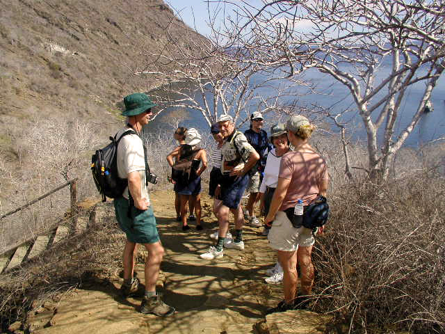
Source
Quasar Expeditions, Hiking up Tagus Cove, Wikimedia Commons. Licence : Creative Commons BY-SA 3.0.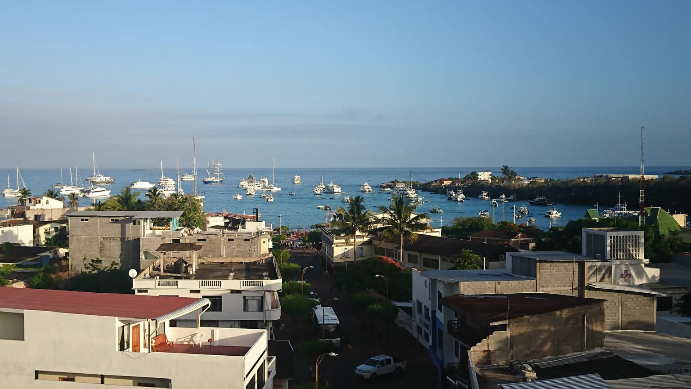
Source
David C. S., Vista de Puerto Ayora, Wikimedia Commons. Licence : Creative Commons BY-SA 4.0.Ce qui menace vraiment
Le déséquilibre ne vient pas seulement des touristes. La colonisation encouragée par l'Équateur, les bateaux et les activités humaines ont introduit des espèces qui n'étaient pas là : des chèvres qui épuisent la végétation dont vivent les espèces sauvages, des chiens errants qui ont décimé des groupes d'iguanes, des rats qui mangent les œufs. Le braconnage se poursuit, et les navires polluent l'eau.
Source : Alloprof
Anticosti, un patrimoine québécois
Anticosti : des fossiles et des cerfs
Choisis un thème, puis un lieu
Inscription, critère et superficie du bien (18 240 ha) : UNESCO et Parcs Canada. Âge des couches et extinction : Parcs Canada et Radio-Canada. Cerfs (nombre introduit, densités, effets sur la forêt) : Université Laval, ULaval nouvelles, 29 avril 2023; estimation de plus de 115 000 cerfs : Le Québec maritime. Chute Vauréal, canyons, grotte à la Patate et saison du parc : Tourisme Côte-Nord et Le Québec maritime. Côtes, rivières, lieux et aires protégées : © les contributeurs d'OpenStreetMap, licence ODbL, simplifiés; la réserve de biodiversité n'y figure pas. Carte de situation : Natural Earth.
La carte a deux thèmes, comme cette section : les fossiles, qui ont valu à l'île son inscription, puis les cerfs, qui posent le dilemme de sa protection.
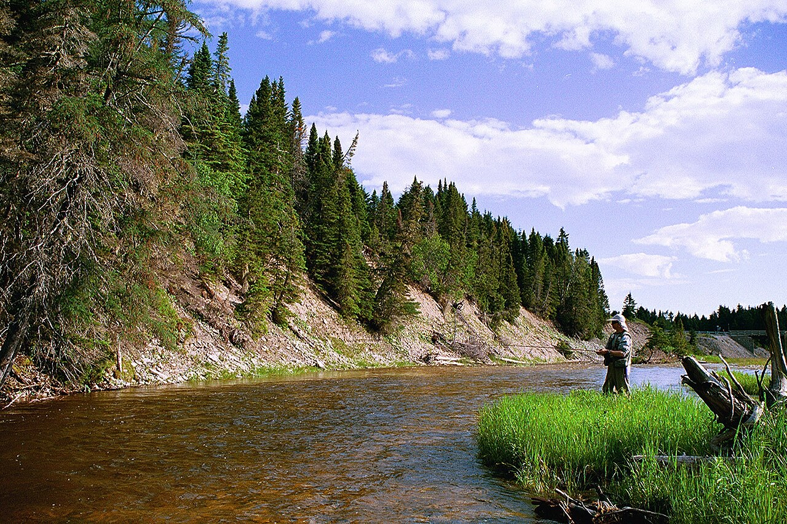
Source
Auteur inconnu, RiviereHuileAnticosti, Wikimedia Commons. Licence : Domaine public.Le 19 septembre 2023, le Comité du patrimoine mondial réuni à Riyad a inscrit l'île d'Anticosti sur la Liste du patrimoine mondial. C'est le premier site naturel du Québec à y figurer. L'île se trouve dans le golfe du Saint-Laurent. Elle couvre environ 7 943 kilomètres carrés, avec plus de 550 kilomètres de littoral, ce qui en fait la plus grande île de la province.
Protégée pour ses fossiles
L'inscription repose sur un seul critère, la valeur géologique. Anticosti est le meilleur laboratoire naturel du monde pour l'étude des fossiles et des couches sédimentaires de la première extinction de masse du vivant, survenue à la fin de l'Ordovicien. Les couches de l'île couvrent dix millions d'années d'histoire de la Terre, entre 447 et 437 millions d'années avant aujourd'hui. Plus de 1 440 taxons fossiles, c'est-à-dire des espèces et d'autres groupes d'êtres vivants, y sont connus. Des milliers de surfaces de roche permettent d'observer les animaux à coquille, et parfois à corps mou, qui vivaient dans les fonds peu profonds d'une ancienne mer tropicale.
Le bien inscrit comprend les couches fossiles exposées le long du littoral et des rivières Vauréal et Jupiter. L'ensemble se trouve à l'intérieur d'un réseau d'aires strictement protégées : un parc national du Québec, deux réserves écologiques et une réserve de biodiversité.
Source : Parcs Canada et UNESCO
Les deux capsules qui suivent se répondent. La première annonce l'inscription, en septembre 2023. La seconde y revient un an plus tard et constate qu'il reste beaucoup à faire. Une inscription au patrimoine mondial n'est pas une fin, c'est un engagement à tenir.
Un cerf devenu un problème
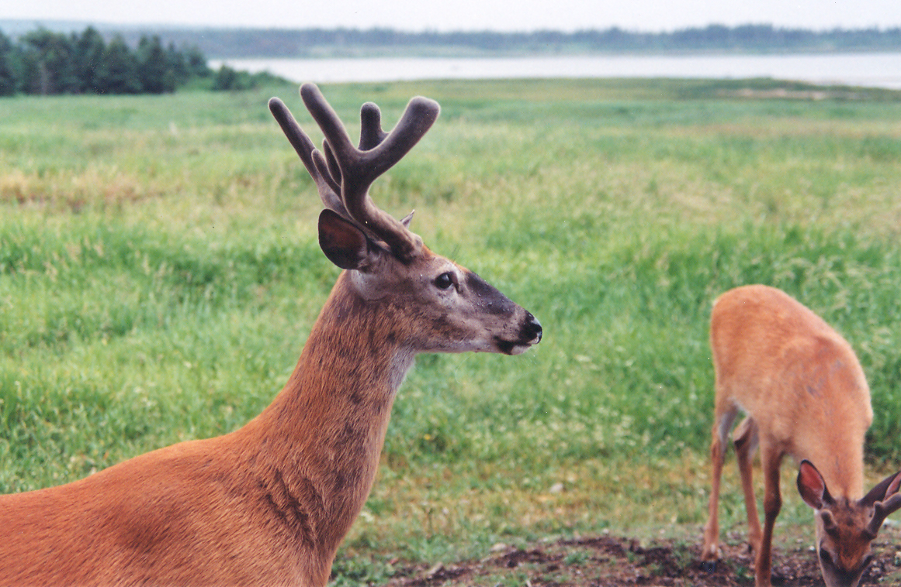
Source
Nichole Ouellette, Anticosti cerf Virginie 950710 18, Wikimedia Commons. Licence : Creative Commons BY 4.0.Vers la fin du 19e siècle, le propriétaire de l'île, l'industriel français Henri Menier, y fait introduire 220 cerfs de Virginie. L'espèce n'était pas indigène. Sans prédateur, elle s'est multipliée jusqu'à modifier profondément la composition, la structure et la régénération de la forêt. Aujourd'hui, la chasse au cerf est la principale activité économique de l'île, qui affiche le plus haut taux de succès de chasse au cerf de Virginie en Amérique du Nord. Une équipe de l'Université Laval y étudie depuis 2001 les relations entre le cerf, la forêt et les autres espèces.
Comparer les deux territoires
Les Galápagos et Anticosti, six critères
Choisis un critère
Les deux îles sont inscrites au patrimoine mondial, mais pas pour les mêmes raisons. Parcours les six critères avant de répondre.
Sources
- UNESCO, îles Galápagos, site numéro 1 de la Liste
- UNESCO, Anticosti
- Parcs Canada, Anticosti, site du patrimoine mondial
- Service national du RÉCIT, le territoire protégé des Galápagos dans Minecraft
- Alloprof, le territoire protégé
- Fondation Charles Darwin
- Nature Québec, protection et mise en valeur d'Anticosti